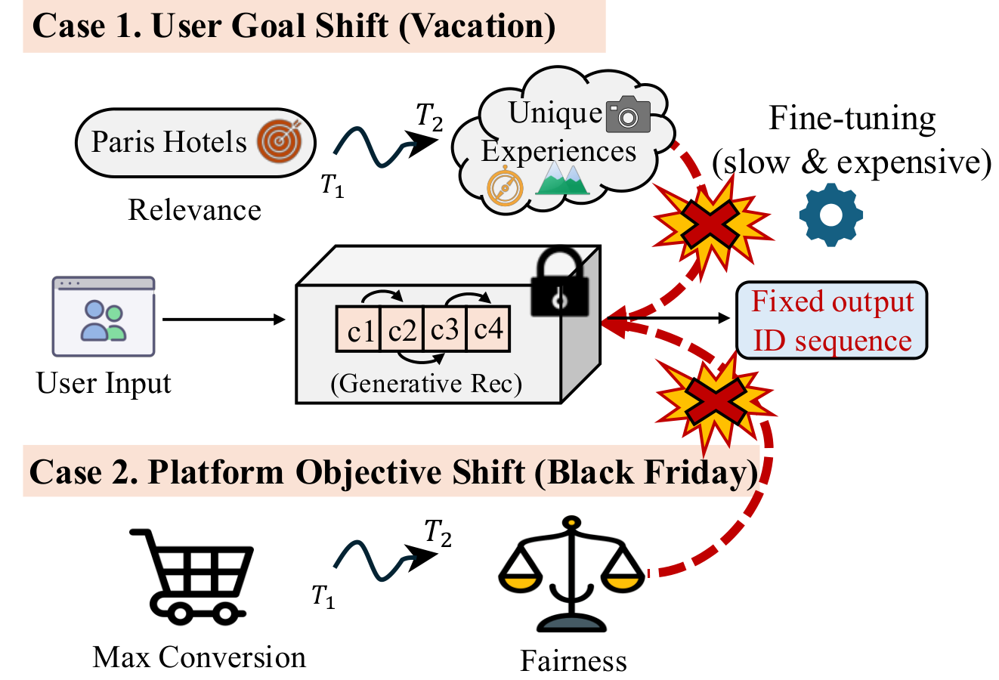
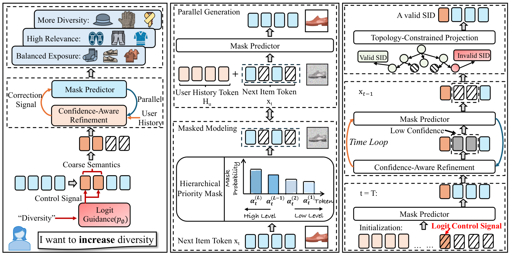

ReGen 把一次推荐拆成三个在线环节：并行生成商品编码、按多样性目标修正编码、沿合法商品路径解码。离线阶段先训练商品编码器，再训练掩码预测模型；在线调整目标时保持模型参数固定。乐器数据集上，完整控制配置的编码有效率为 99.97%。这个数字说明输出能映射到商品，相关性还要另看 Recall 和 NDCG。
1. 问题与动机：目标变化要进入生成过程
这一部分解决“用户临时想看更多不同类别时，召回范围如何随之改变”。语义 ID 是给商品分配的一串短编码。靠前的编码概括粗粒度语义，后面的编码补充细节。传统自回归生成从左向右逐个预测，前面的决定会约束后面的选择。
如果多样性只在最后重排，系统只能调换已经召回的商品。ReGen 希望在生成候选时就扩大语义范围，再把细节修好。因此，标题中的 Controllable 对应推理期分数引导，Guided 对应粗粒度编码的历史频次惩罚，Token Refinement 对应低置信度位置的反复填空。

看用户和平台目标如何随时间改变：原图用于说明调整生成目标的动机；公平性只是示例，论文实验集中于多样性。
整体流程如下。RQ-VAE 是残差量化变分自编码器，它用多级码本近似商品向量。前缀树把已有商品编码组织成合法路径，服务时负责限制生成范围。
| 阶段 | 执行位置 | 输入与输出 | 学习信号 |
|---|
| 文本编码与量化 | 离线 | 商品文本→四级语义 ID | 商品向量的量化与重建 |
| 掩码模型训练 | 离线 | 用户历史、部分目标编码→缺失编码 | 目标商品被遮住的编码 |
| 引导和反复修复 | 在线 | 历史频次、控制强度→候选编码 | 固定参数，仅改推理分数 |
| 合法解码与选单 | 在线 | 候选编码→去重商品列表 | 前缀树约束、类别增益 |
2. 方法：先改变粗语义，再修复细节
这一部分位于在线候选生成阶段，处理“控制目标变了，细粒度编码怎样跟着变化”。商品编码包含四层；每层码本有 256 个候选值。模型以双向注意力读取用户历史及部分目标编码，同时预测被遮住的位置。
训练时，粗粒度位置的遮蔽概率较低。模型因此经常练习“已知大类，补齐细节”。服务时则从全掩码开始，逐轮保留可靠位置，重填不可靠位置。这里的并行是同一轮预测多个位置；整个推理仍然包含多轮更新。

按左中右阅读：左侧控制信号改变粗语义，中间模型并行填空，右侧反复修复低置信度编码并检查合法商品路径。
多样性引导通过历史计数实现。对受控层的某个编码，作者使用：
z~l(v)=zl(v)−λlog(1+nl(v)).
这里，l 是编码层，v 是该层的一个候选编码值，zl(v) 是模型原始预测分数，nl(v) 是这个编码值在用户历史中的出现次数，λ 是引导强度，z~l(v) 是调整后的分数。直觉是：用户反复看过的粗语义受到更大扣分，让其他语义有机会进入候选。
模型接着检查预测置信度，即该位置最大预测概率。低于本轮阈值的位置重新遮住，再结合已经保留的编码预测。阈值随轮次变化；控制过后的细粒度编码可以据此重新适配。
合法性由前缀树负责。若一个编码值与当前固定位置组合后，无法补全成任何目录商品，它的分数设为负无穷。束搜索每轮保留若干较好的候选路径，避免只保留单一预测。论文默认束宽为 50，实验中约四轮修复后指标趋稳。
最后，将合法编码映射为商品，移除用户历史和重复商品。列表选择还会给新增类别加分。因此论文的多样性收益同时涉及生成期引导和列表期选取，消融实验固定后者，再检查生成组件的贡献。
一次请求的具体走查
下面的数值是示意，商品与编码也是假设。用户最近浏览了九次吉他配件，现在希望看到更多不同乐器。候选“练习鼓垫”的编码为 $(12,8,31,6)$，第一层代表一个粗语义区域。
假设“吉他配件”第一层编码原始分数为 5，历史计数为 9；“鼓类练习用品”分数为 4，历史计数为 0。取 λ=1，前者分数约为 5−log(10)=2.70，后者仍为 4。鼓类因此更可能进入后续路径。
此时，旧预测的第二、三级编码可能与鼓类语义不匹配。模型遮住这些低置信度位置，利用已选粗编码和用户历史重新预测。前缀树随后剔除目录里不存在的组合；束搜索保留能补全为真实商品的路径。练习鼓垫映射成功后进入候选池，列表选择再检查它是否增加类别覆盖。
这个例子也说明两个控制点的区别：频次惩罚作用于用户过去看过的语义；类别增益作用于正在构造的本次列表。
3. 核心贡献：控制、修复和合法性各有职责
这一部分解释生成过程为何能同时改变探索方向并保留推荐效用。粗层引导负责改变概率分布，置信度修复负责恢复编码内部的一致性，前缀树负责限制结果属于真实目录。三个组件处理的是不同问题。
论文消融里，去掉修复后，多样性可以更高，但召回明显下降。这说明“推荐类别更多”本身不足以说明系统更好。去掉前缀树则会产生大量无法落到商品的编码，后续排序也无法利用它们。
另一个可借鉴点是实验比较方式。作者分别报告追求准确率的配置和追求可控性的配置；读者评估控制能力时，应比较相同多样性水平下的 Recall，而非把不同配置的单个最优数字拼在一起。
4. 实验：在相同多样性下比较召回
这一部分检验控制机制是否能用较少的相关性损失换来类别覆盖。实验使用 Amazon 2023 的乐器、工业与科学用品、电子游戏三个子集。按时间排列交互，最后一次用于测试，倒数第二次用于验证。
Recall@10 表示真实下一件商品是否进入前十；NDCG@10 进一步考虑它出现的位置。Diversity@10 衡量类别覆盖。TIGER-MMR 是语义 ID 生成模型 TIGER 加最大边际相关性重排；ComiRec 是多兴趣推荐模型；Paragon 用任务参数生成做可控推荐。
| 配置与比较条件 | ReGen | 对照 | 含义 |
|---|
| 乐器，Diversity@10 约 0.54，Recall@10 | 0.0398 | TIGER-MMR 0.0351 | 相近类别覆盖下召回更高 |
| 科学用品，多样性约 0.56，Recall@10 | 0.0351 | TIGER-MMR 0.0235 | 高多样性区域仍保留效用 |
| 乐器，控制配置，移除修复 | 0.0339 | 0.0130 | 修复帮助保住召回 |
| 乐器，控制配置，移除前缀树后的有效率 | 99.97% | 27.63% | 合法路径约束作用明显 |
| 乐器，准确率配置，Recall@10 | 0.0646 | Paragon 0.0861 | 纯准确率并非最优 |
第一行按表中数字计算，(0.0398−0.0351)/0.0351≈13.4%，这是同一多样性附近的相对召回差异。它和线上点击率不是同一种指标。
电子游戏子集上，ReGen 落后于强准确率基线。结果更适合支持“推理期调节探索范围”的价值，而不是宣称所有数据上的推荐准确率领先。
5. 局限：目前主要验证了类别多样性
这一部分限定控制结论的适用范围。作者明确表示，公平性、曝光平衡、新鲜度等目标尚待系统评估。原图中的业务目标示例没有对应的全部实验。
控制还依赖语义 ID 的层级质量。如果粗层编码与商品类别关系很弱，降低某个编码的历史频次未必能稳定提高目标多样性。论文也把更少依赖分词器的控制机制列为后续方向。
离线类别覆盖还不能回答用户是否愿意点击新增类别。工程评估需要同时记录有效候选数、覆盖、相关性和延迟，使控制强度变化带来的代价可见。
6. 工业实践意义：给生成召回增加可观测的控制量
这一部分对应社区搜索和推荐的试验设计。已有语义 ID 召回时，可以记录历史粗编码分布，比较生成期引导与现有结果重排各自带来的新增类别和新增相关结果。二者使用相同的列表长度与下游排序器。
把编码有效率单列为服务指标。前缀树约束、商品上下架和编码映射需要保持一致，才能保证控制后输出仍有足够可用候选。
最后，将引导强度和修复轮数作为独立实验变量，绘制类别覆盖、Recall 和延迟的关系。论文的四轮趋稳可作为离线起点；真实请求中的合适轮数由本地目录、行为分布与响应预算共同决定。